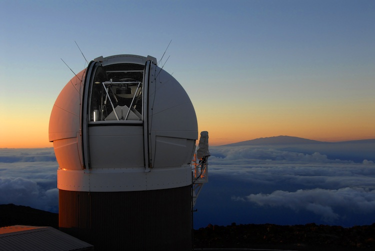

Science
White dwarfs are the most common objects in the stellar halo; however, due to their low luminosity and the low density of the halo compared to the discs of the Milky Way, they are very scarce in the solar neighbourhood. Hence, they are still poorly understood a hundred years since the discovery. They are crucial to the understanding of the fundamental properties of the Galaxy as well as the ones afar: the geometry, kinematics and star formation history (SFH), as well as providing clues to the end stage of stellar evolution for low and intermediate mass stars.
White Dwarf Luminosity Function
The use of white dwarf luminosity function(WDLF) for dating a population was first applied to a sample of high proper motion WDs was used to construct the WDLF for the solar neighbourhood with the 1/Vmax method. He arrived at an estimate of ~8 Gyr for the disc age, a new method to constrain the disc age completely independent of cosmological models. In the follow decade, larger footprint area with longer epoch differences combined with better WD cooling and atmospheric models confirmed this result repeatedly with less uncertainties. The number has also of WDs has also exploded from the 80 confirmed WDs in 1987 to 28,154 with the help of varies surveys and most notably the SDSS. Acquiring a complete spectroscopic survey is time consuming and expensive, some works have moved onto doing it statistically with WD candidates selected solely by photometry and/or proper motions. With time, a WDLF inversion technique was developed, it allows the SFH of the Galaxy to be constructed through the application of the initial mass function(IMF) and the initial final mass relation(IFMR), which maps the mass of a WD to that of its MS progenitor. Using a statistical number of halo members from large scale surveys(eg. Pan–STARRS, Gaia), it is possible to shed new light onto the long-debated formation scenario of the stellar halo from a completely new perspective.
Generalisation of 1/Vmax density estimator for a proper motion limited sample
Click here for the journal article.
We have identified a bias present in the whole family of maximum volume methods when calculating distance limits by holding the tangential velocity constant along a single line of sight or across the sky:
Constant tangential velocity along line of sight
The kinematics of an object is a property of the Galaxy. An object at a given magnitude at any given distance from the observer should not carry the same tangential velocity at a different line of sight distance when tested for observability. This assumption is only good over small field of views and small range of line of sight distances.
Constant tangential velocity across the sky
Consider a spatially uniform population like the stellar halo, and an all-sky survey where the proper motion limits are uniform over the sky. The tangential velocity distribution varies along different lines of sight due to the solar motion. For stars at a given magnitude, a different fraction of the population will pass the proper motion limits along different lines of sight due to the differences in the tangential velocity distributions. In the most extreme cases, on average, a halo WD observed in the direction of the Anti-Galactic Center(AGC) would appear to have a large velocity due to reflex motion imparted by the Sun in its orbit within the Galaxy. However, if one is observed in the direction to the solar apex instead, the motion would be much smaller on average. The consequence is that when proper motion limits and tangential velocity limits are applied, different numbers of stars would be detected in different regions of sky even for identical survey limits and spatial density. In the case where tangential velocity is not constant, there would be a mismatch between the parameter space of the completeness correction factor and the volume integral.
Pan-STARRS
The Pan-STARRS 1 system is a wide-field optical imager devoted to survey operations. The telescope has a 1.8m diameter primary mirror, located on the peak of Haleakala on Maui. The site and optics deliver a PSF with a full-width at half-maximum of about 1arcsec, over a seven square degree field of view. The focal plane of the telescope is equipped with the Gigapixel Camera 1, an array of 60 4800×4800 orthogonal transfer array(OTA) CCDs. Each OTA CCD is further subdivided into an 8×8array of independently addressable detector regions, which areindividually read out by the camera electronics through their own on-chip amplifier. Most of the PS1 observing time is dedicated to two surveys: the 3π Sterdian Survey, that covers the entire sky north of declination -30o, and the medium-deep survey, a deeper, many-epoch survey of 10 fields, each 7 deg2 in size. Each survey is conducted in five broadband filters, denoted gP1, rP1, iP1, zP1, and yP1, that together span 400-1000nm. These filters are similar to those used in the SDSS, except the g$_{P1}$ filter extends 20nm redward of gSDSS while the zP1 filter is cut off at 920nm. The yP1 filter covers the region from 92 nm to 1030nm. The PS1 images are processed by the Pan-STARRS 1 Image Processing Pipeline. This pipeline performs automatic bias subtraction, flat fielding, astrometry, photometry, and image stacking and differencing for every image taken by the system.
The 3π survey is executed so that each time a patch of sky is visited, it is observed for about 40s twice, at times separated by an interval of about 15 minutes. The two observations make a transit-time-interval(TTI) pair. These observations are used primarily to search for high proper-motion solar system objects. Each year, the field is then observed a second time in the same filter with an additional TTI pair of images, making for four images of each part of the sky, per year, in each of the five PS1 filters. This makes for two independent TTI pairs of observations, on average, of each part of the sky.

PanSTARRS-1 at dawn. The mountain in the background is Mauna Kea.
Photo by Rob Ratkowski. Copyright © by PS1SC.